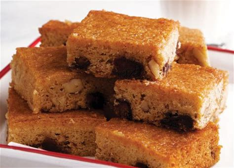

Food for the Gods

Ingredients
- 1 1/4 cups all-purpose flour
- 1 cup butter
- 1 cup granulated sugar white
- 1 cup brown sugar
- 3 large egg yolks
- 1/2 teaspoon baking soda
- 1/2 teaspoon baking powder
- 1/4 teaspoon salt
- 1 cup walnuts
- 1 cup dates
Instructions
- In a mixing bowl, combine the flour, baking soda, baking powder, and salt then mix well.
- Cream the butter in a separate mixing bowl and add the sugar (white and brown) while continously mixing until texture becomes fluffy.
- Beat-in the eggs on the mixing bowl with butter and sugar then continue mixing until everything is well distributed.
- Gradually add the flour-baking soda-baking powder-salt mixture while continously mixing (don't forget to scrape the sides with a silicon spatula).
- Put-in the dates and walnuts then mix until well distributed.
- Preheat oven to 350 degrees Fahrenheit
- Grease the baking pan and pour-in the batter.
- Bake for 10 minutes then pull down the temperature to 300 and continue baking for 35 minutes or until done (you may use the toothpick technique)
- Remove from the oven and allow to cool down
- Slice and wrap individually if desired.
- Serve. Share and enjoy!